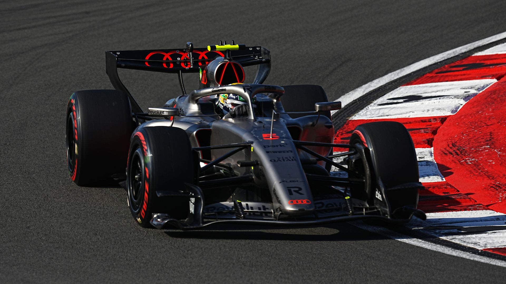

Audi possui uma grande história no automobilismo, marcada por tecnologia, inovação e vitórias em diversas categorias. A marca ficou mundialmente conhecida nos ralis com o sistema quattro e também dominou as 24 Horas de Le Mans com carros híbridos avançados. Em 2022, a Audi anunciou sua entrada oficial na Fórmula 1 para a temporada de 2026, assumindo a equipe Sauber e desenvolvendo seu próprio motor híbrido. O primeiro carro da equipe será o R26, marcando o início da trajetória da Audi na principal categoria do automobilismo mundial.
Audi chega à Fórmula 1 trazendo foco total em tecnologia, inovação e performance. A equipe está desenvolvendo um motor híbrido moderno para as novas regras de 2026, buscando maior eficiência energética e alto desempenho nas pistas. Conhecida pela engenharia avançada e pelo uso de tecnologias vencedoras em outras categorias, a Audi pretende unir velocidade, aerodinâmica e sustentabilidade para competir entre as melhores equipes da Fórmula 1.

Os pilotos da Audi para sua estreia oficial na Fórmula 1 em 2026 serão Nico Hülkenberg e Gabriel Bortoleto. Hülkenberg traz experiência para ajudar no desenvolvimento da equipe, enquanto Bortoleto representa a nova geração do automobilismo brasileiro, chegando como uma das grandes promessas da categoria. Juntos, os dois pilotos serão responsáveis por liderar o início da trajetória da Audi na Fórmula 1.